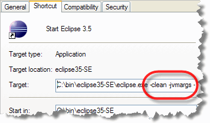
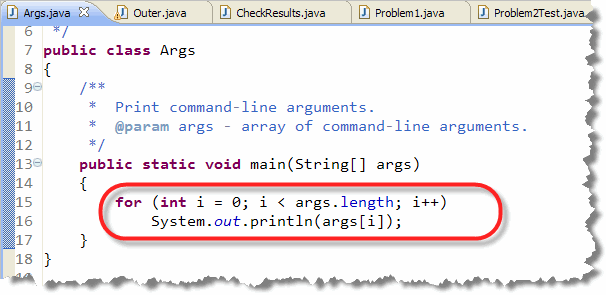
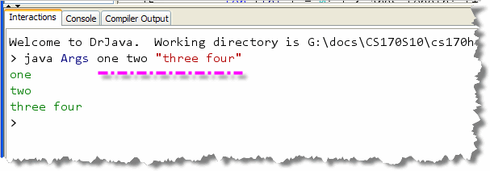
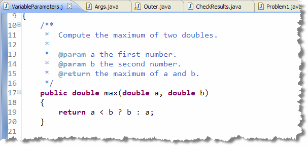
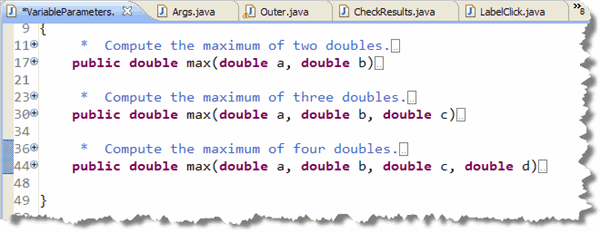
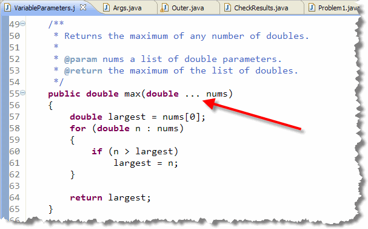
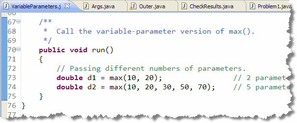
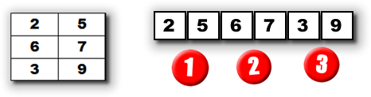

Now, let's look at three additional array topics. In this section we want to learn:- how to process the array of command-line arguments that are passed to every application.
- how to use arrays to write methods that take a variable number of arguments.
- how to convert between 2D arrays and 1D arrays which can become important in some graphics, video and sound applications.
Let's start with command-line arguments, which allow you to customize the way a program works, either from the shell window (thus the name, command-line arguments), or from a GUI shortcut if you are working in Windows or on the Mac. In the picture shown here, for instance, the Windows Eclipse shortcut has been modified to change the way that the Eclipse IDE uses memory when it runs.
Command-line Arguments
One of the most common uses of String arrays
is when you create an application and you need to pass information
into that application when you run it.
With applications, both GUI and console-mode, arguments
are passed to your program via the operating system shell
command line,
similar to those you supply when you use javac to compile
your Java code from the terminal window.
When you manually compile your code, you type in the word
javac, and then follow that with the name
of the program you want to compile, like this:
 The program file name you supply, VoteCounter.java in the screenshot
shown here, is an example of a command line argument.
The program file name you supply, VoteCounter.java in the screenshot
shown here, is an example of a command line argument.
Processing the Command Line
As you'll recall, when a Java application begins, it starts with the
main() method. The main() method is passed
a single argument from the operating system, an array of
String, traditionally called args.
(Of course, you can name it anything you like.)
Inside your main() method, you can check the field
args.length to see how many arguments were passed.
If no arguments were passed to your application, then
args.length will be 0.
Since args.length tells you how many arguments there are, the
situation practically begs for a for loop,
right? Here's a simple console mode application, Args.java,
that you can use to see how this works. You'll find it in this chapter's
code folder.

Since Args is a console mode application, it doesn't need to extend anything, it just needs to have amain()
method. Inside the main() method, the program simply loops
through the array (args) and prints each command
line argument to the console.
Here's what the program looks like as it runs from the Windows
console or "shell" window:
 As you can see, Java separates each word into a separate element of the
As you can see, Java separates each word into a separate element of the
args array: the first word becomes element 0, the second
becomes element 1, and so on. When you enclose several words in quotes,
like "Three Four" in the example, the entire phrase is treated as a single
element of the array.
Running From DrJava
You can also run a program that processes command-line arguments
from within the DrJava by using the Interactions Pane, instead of
the Run button. To run your program, just type the same
command you would type into a console window,
like this:

In the example here, I've typed in exactly the same arguments that I used when running from the console window. When you run the program in the DrJava IDE, the output appears in the Interactions Pane as shown here, as well as in the Console Pane. Remember: command-line arguments are passed as
Strings, not numbers. That means that
if you want to process numbers, you'll need to convert
the numbers, using a method like Integer.parseInt().
Variable-Length Parameter Lists
Variable-length parameter lists are a feature introduced with Java 5
that allows you to create methods that take, as the name
suggests, a variable number of parameters. Suppose, for
instance, that you wrote a method that returned the
maximum of two doubles, like this:

This is fine for two numbers, but when you need to find the maximum of three numbers, or four, you'll need to write overloaded methods for each of those cases, like this:
Of course, the code in each method is going to be different, to handle the differing number of arguments. Variable-length parameter-lists allow you to write a single method that can be used in all of those cases. Here's how it works.Parameter Definition
A variable-length formal parameter is really a way of defining a special kind of array parameter. When defining the formal parameter, use an ellipsis (three dots) instead of the square brackets you'd use for a normal array declaration.
Here's an example using the max() method:

Inside themax() method, you treat nums
as a regular array of double. That means that you can use the
standard array-processing algorithm for finding the largest
value, and then return that, as shown here.
Using the Method
The big difference between a variable-length parameter method, and one that takes a regular array as a formal parameter, is that, for the variable-length variety, Java will create the array for you; with the "regular" version, it's up to the caller to create the array before calling the method.

Constructors can also be written to accept variable numbers of parameters. You can combine a variable-length parameter with regular parameters, but the variable-length parameter must come last. You can't have more than one variable-length parameter per method.
2D to 1D Arrays
In Section 11.5—Image Processing, you'll learn how to
do image processing with 2D arrays, using the getPixelArray()
method of the GImage class. The 2D array that you get back has
one int for every pixel in the original picture, with the
red, green, blue and alpha values for the pixel packed into that integer.
This 2D representation of an image is both intuitive (because it's easy to
picture the position of each pixel in the actual physical image), and
easy to work with. However, many of the native image processing
classes in the Java API require a 1D array of int instead.
This is not a problem in the C or C++ languages (which much of the underlying Java code was written in), since in those languages the storage for 1D and 2D arrays are identical; the only difference between them is the notation used to access the individual elements.
To solve this problem in Java, you have to know how to convert between 1D and 2D arrays. You can't do this with casting; it always involves a loop. Here's how to do it.
2D to 1D array
Assuming that you have a rectangular array (that is, all rows have the same number of columns), you can convert it to a 1D array using this code fragment:
// Assume that twoD is the 2D array variable to convert
int cols = twoD[0].length;
int rows = twoD.length;
int[] oneD = new int[rows * cols]; // allocate space
int pos = 0;
for (int[] a : twoD) // enhanced for loop
{
System.arraycopy(a, 0, oneD, pos, cols);
pos += cols;
}
Here's what that looks like visually:

Notice that the first row, is followed by the second, which is followed by the third. You might wonder, though, how you can find the equivalent of
twoD[1][1], now that the elements have been moved into a
single, flattened 1D array. That's pretty easy.
The formula for is simply: columns * row + col. So, in our case,
columns (that is, then width of each row in the rectangular
2D array) is 2, so the equivalent element can be found at
oneD[2 * 1 + 1]. (If you check yourself, you'll see that
in both cases, that is the value 7 in the illustration.)
1D to 2D
To go the other direction, you have to know how many columns go into each array. Here's a function that takes a 1D array, along with the width of each column, and returns a 2D version of the array.
// Assumes that length is evenly divided by width
int[][] oneDTo2D(int[] oneD, int width)
{
if (oneD.length % width != 0)
throw new IllegalArgumentException("explain");
int[][] result = new int[oneD.length / width][width];
for (int i = 0; i < result.length; i++)
System.arraycopy(oneD, i * width, result[i], 0, width);
return result;
}

More Array Topics Summary
- Command-line arguments are passed to your program by
the operating system (usually by the command-processor, or "shell")
when it is launched. You can retrieve these arguments by
processing the array of
Stringsupplied to the application'smain()method. - Each word passed on the command line becomes an element in the command-line arguments array.
- Normally, the operating system will "pre-process" the command-line strings before they get to your program. In both Unix and Windows, for instance, enclosing a pair of strings in double-quotes delivers it to your application as a single element of the command-line array.
- Command-line arguments are passed to your programs as
Stringelements, so any numeric values will have to be parsed as part of your initial processing. - A method can accept a variable number of parameters, provided all of the parameters are the same type. The variable parameter must be the last parameter in the parameter list. To declare a variable formal parameter, simply add an ellipsis (three dots) after the variable type
- Inside your method, you treat a variable parameter the same way you would treat an array parameter. When you call the method, though, you pass individual values for each element, not an array.
- To convert a 2D rectangular array to a flattened 1D array, create an empty array and copy each row into the new array. To turn a flattened 1D array back into a 2D array, divide its length by the number of columns in each row, create a new 2D array with that number of rows and columns, and then copy each portion of the original array into a new row.
- To convert a 2D array row, column subscript pair into its equivalent 1D flattened single subscript, multiply the 2D row subscript by the width of a single column, and then add the 2D column subscript.